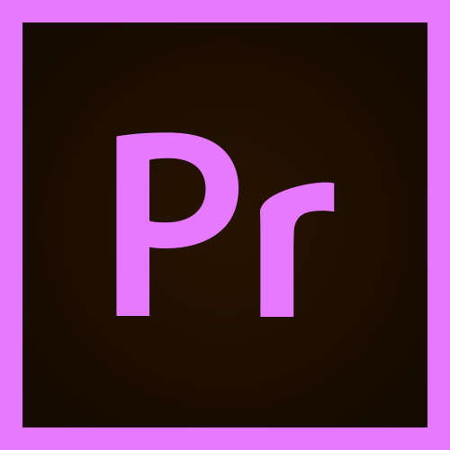
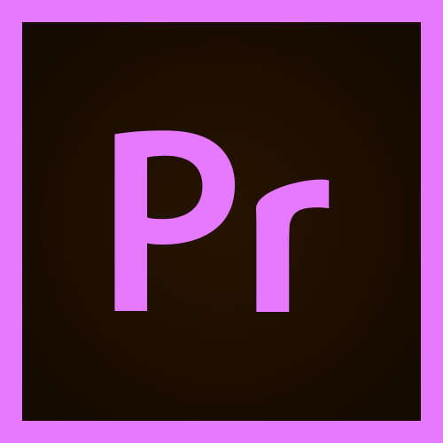

Hello! I'm a second year undergraduate student in University at Buffalo, pursuing a computer science B.S. degree. My hobbies include programming, weightlifting, video editing, and game development. I am primarily self-taught in programming, and my favorite languages are C, C++, and Python, but I also program in Java, JavaScript, Lua, and Scala. I am also familiar with the Linux terminal, SQL, and x86 Assembly, which I am currently learning on my own.
I can be reached at: maclaneowen01@gmail.com


 



This was my first ever hackathon project, which I completed with my two roommates for UB Hacking's 24 hour event. Decide to compete for Fidelity's Financial Literacy Prize to win a Raspberry Pi, we made a game centered around the life of a college student, which is something we had no trouble imagining. In the game, your goal is to manage your money properly, as well as learn information such as when to save/invest money, the difference between debit/credit, and other information with the end goal of paying off a boatload of textbook/tuition loans. Our game was created in Python using PyGame, and the source code can be found on Github here.
Bruh City was originally an attempt to create a large-scale NYC-themed game in Roblox, before ultimately realizing the sheer amount of time needed to develop the game independently. However, what remains is what I would consider one of my most successful projects, which is a game framework designed to handle massive amounts of objects while maintaining a relatively low performance impact for clients, leaving the majority of the computation to the server. By progressively loading/unloading chunks and caching unused entities, players can load into a game of any size, even on mobile devices, without the risk of lowered framerates. While the 3D modeling is something I haven't been able to complete myself, the source code is available for anyone who wants to make their own version here, and the game prototype itself is playable on Roblox here.
After entering a large number of Youtuber giveaways and wondering how much time I had spent entering them without winning anything, I figured that I would be better off creating a program to automate the process for me. GleamScraper is written in Python using the PyAutoGui module. It implements a webscraper to find a list of all the active giveaway links (usually around 1400), and then uses PyAutoGui to visit each link and use image recognition to navigate through the giveaway entry process. This program was created in a day, and when testing entered 600 giveaways overnight. I still did not win anything, which I took as a sign to give up on giveaways. For anyone who wants to improve upon this project, the source code is available here.
While the world of Discord bots may be slightly oversaturated, I still wanted to create something new for my server. Aside from the generic music playing, reminder setting, and image editing features I implemented, I decided to implement a sort of pseudo-cryptocurrency for members to use. Being the crypto nerd that I am, I attempted to create my own with a SHA-256-based algorithm with a similar proof-of-work method to that of Bitcoin. However, instead of endlessly hashing numbers, it uses chat messages as a mining method. When a user sends a message on the server, the contents of the message are hashed (after applying a salt to prevent rainbow-table usage), and if the hash is lower than the current target, then the user has successfully mined a block and that hash becomes the new target. Why I would consider this to be a pseudo-cryptocurrency and not a real one is not due to a lack in physical value, since real cryptocurrencies lack this as well, but rather it is due to a lack in decentralization, since the entire algorithm runs entirely in the discord bot. This was a great introduction into API usage for me, and for anyone wishing to make modifications, the prototype is available on Github here for now.
This is my most recent project and possibly my most ambitious, but I was too excited about it to not add it to my website. What I am attempting to do is implement an automated Stocks/Futures trading algorithm using Python and C. The program uses what I would consider a "survival of the fittest" method of algorithmic trading, in which new algorithms are automatically created based upon the currently most successful ones, with the least successful algorithms being scrapped. This could be thought of as a primitive machine-learning implementation, and each algorithm tests itself on large amounts of historical data in an attempt to factor out luck in the learning process. While the programming aspect has been relatively straightforward, I never expected the world of finance and algorithmic trading to be as complicated as it is. Learning about trading strategies and technical analysis has been a brand new experience for me, and there is still a lot for me to learn in regards to this project. When I have a fully-working prototype without bugs, I will release it here.